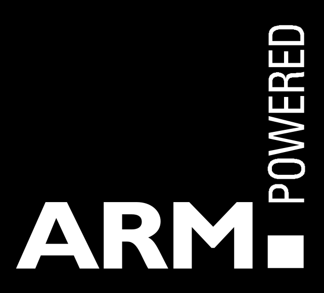

Le processeur ARM

L'architecture ARM (Acorn Risc Machine) est une architecture de processeur développée et utilisée par la société britannique Acorn Computers à partir du milieu des années 1980. Elle consiste en une une architecture de type RISC simplifiée.
Du fait de cette simplicité, les processeurs concus avec une architecture ARM sont particulièrement économes en électricité.
Ces processeurs sont donc privilégiés pour l'informatique embarquée (smartphones, tablettes…).
Exemple :
Processeur Qualcomm Snapdragon 720G basé sur l’architecture ARM, utilisé en grande partie sur les tablettes et smartphones Android

Source image : Pixabay
 Accueil
Accueil